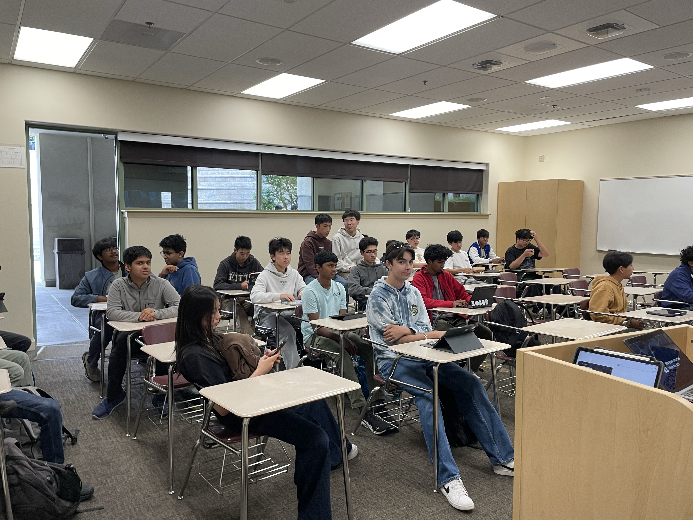
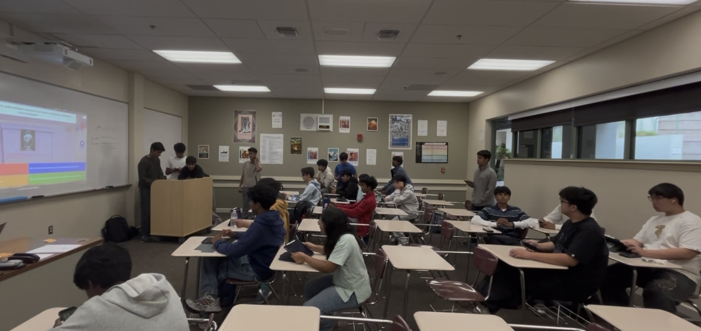
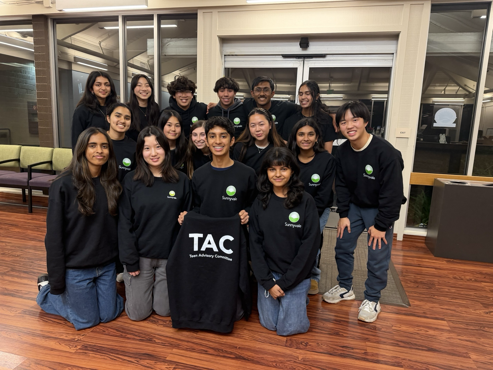
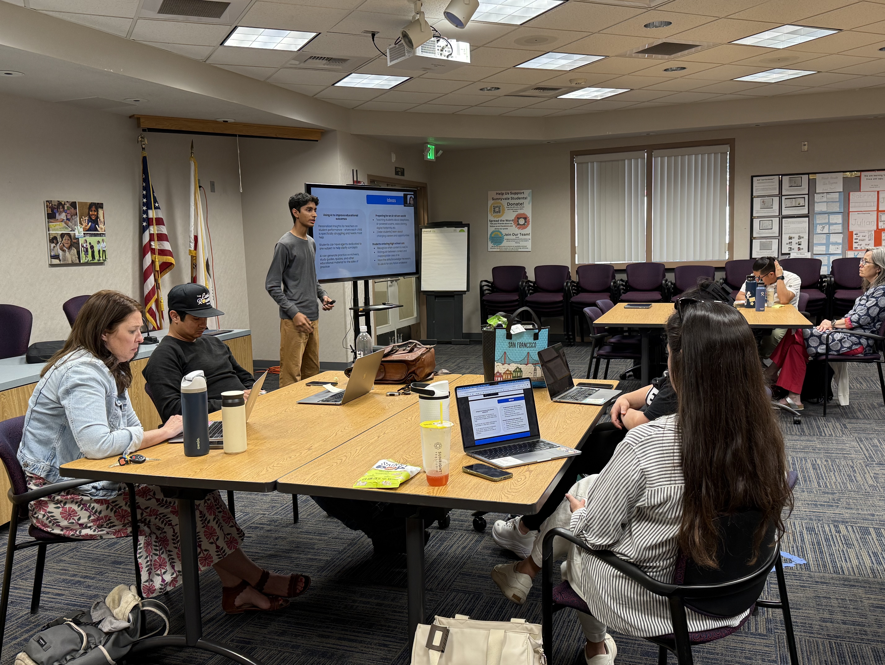
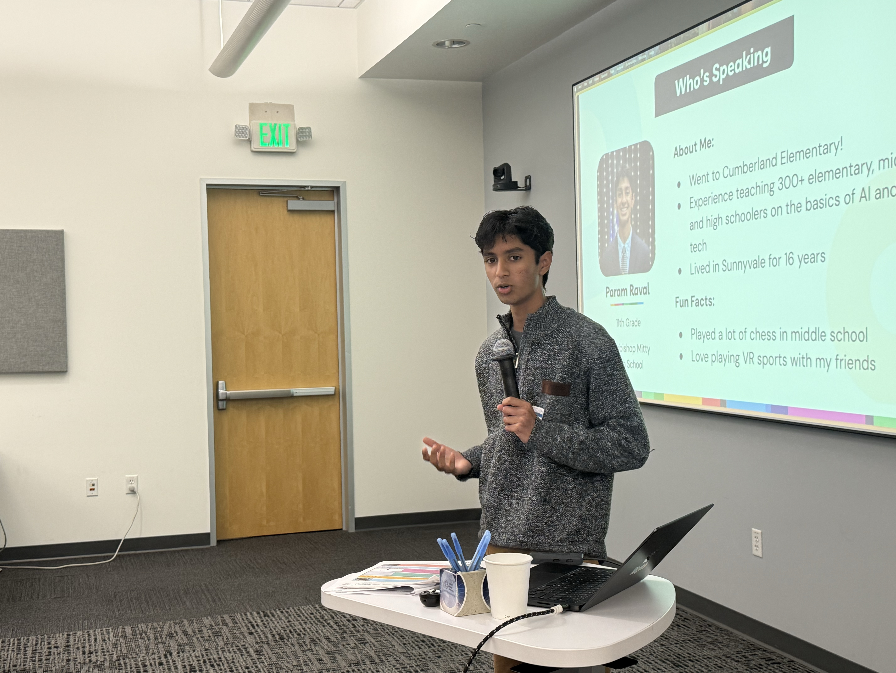
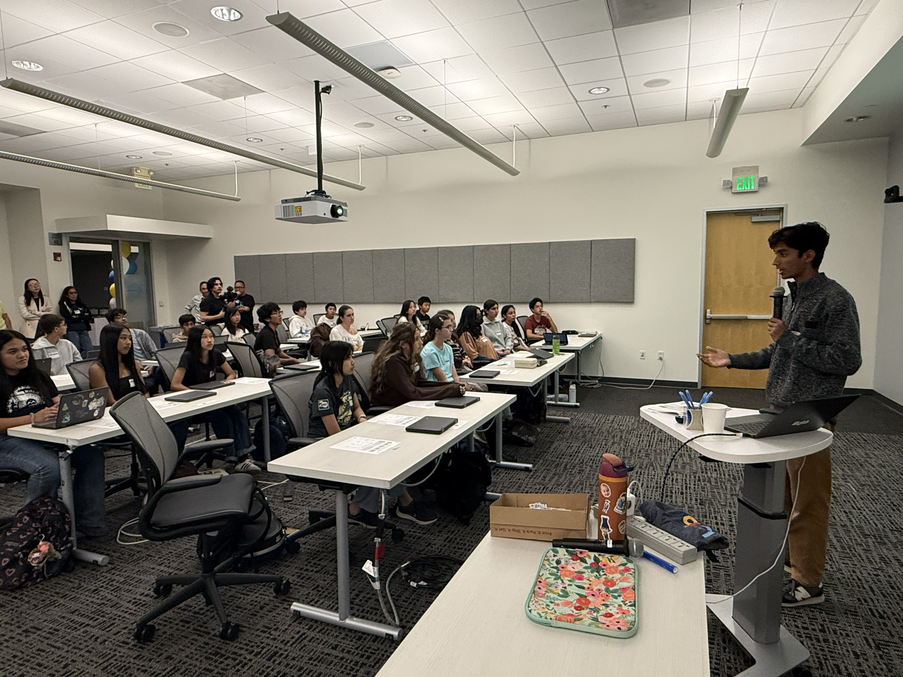

Service & Leadership
Vice President (2025 - present) of Archbishop Mitty High School Speech and Debate Team
Serving as Vice President of Lincoln-Douglas Debate on Mitty Speech and Debate (150+ members), ranked #1 in California and Top 10 nationally. Leading research initiatives, mentoring underclassmen, and managing team logistics, contributing to historic results including freshman qualification to nationals, underclassmen winning elimination rounds at statewide invitationals, and multiple undefeated records at local tournaments.
Founder and President of the Emerging Technology Club at Archbishop Mitty High School
Created Archbishop Mitty's Emerging Technology Club (80+ members), running sessions on AI safety, cryptography, and quantum computing paired with interactive simulations, including a student-run blockchain simulation, a human vs AI skills competition, and a quantum computing escape room. Culminated with CED Hacks, a week-long hackathon with 14 projects, 46 competitors, and $199 in cash prizes.



President (2025-26) of City of Sunnyvale Teen Advisory Committee
Elected as President and led 16 Sunnyvale high school students in organizing and hosting community events for Sunnyvale's teen population. Managed logistics, finances, and outreach for events including a winter "Sleigh Your Finals Study Hall" event that drew 60+ attendees, contributing to a 61% increase in turnout and participation.

Co-President of Critically Thinking (CT) Debate
Leading CT Debate, a nonprofit organization teaching students to think critically, question assumptions, and share their stories, with an emphasis on reasoning and argumentation. Created videos and lessons covering argument structures and debate strategies alongside topic analysis videos and NSDA event breakdowns. Overall outreach includes over 800 active followers across social media platforms with over 33,000 cumulative views as we expand into more curriculum themes such as human thinking in the age of AI.
AI Policy Advisor for Sunnyvale School District
Independently reached out to the Sunnyvale School District and was brought on as the sole student voice on their AI Task Force, a committee of educators and district officials. Presented formal recommendations on student-centered AI curriculum integration, such as personalized learning insights, AI-generated study resources, and education on deepfakes and AI's impact on the workforce.

Co-Leader of Sunnyvale Middle School AI Innovation Jam
Helped lead an AI innovation event at Applied Materials for 50 Sunnyvale 8th graders in collaboration with Playlab AI and the Sunnyvale School District, in which students learned how large language models work, and built their own no-code chatbots designed to solve everyday problems. I gave an opening introduction, provided individualized feedback to teams throughout the build phase, judged final pitches, and delivered the closing reflection.

